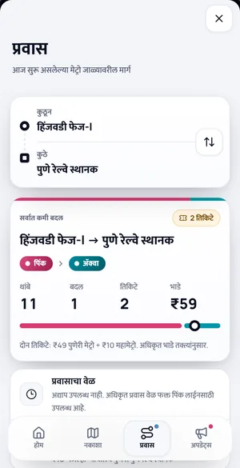

व्हॉट्सॲपवर पुणे मेट्रोचे तिकीट
एकाच व्हॉट्सॲप क्रमांकावर, +91 94201 01990, तिन्ही मार्गिकांची QR तिकिटे मिळतात. ते कसे काढायचे, दोन तिकिटे लागणाऱ्या प्रवासात काय करायचे, आणि तिकीट न आल्यास कोणाशी संपर्क साधायचा, हे इथे आहे.
क्रमांक
+91 94201 01990 हा पुणे मेट्रोचा व्हॉट्सॲप तिकीट क्रमांक आहे. महामेट्रोने पर्पल आणि ॲक्वा लाईनसाठी तो आपल्या वेबसाइटवर दिला आहे, आणि पुणेकर न्यूजच्या वृत्तानुसार लाईन 3 म्हणजेच पिंक लाईनचे तिकीटही याच क्रमांकावर मिळते. पुणेरी मेट्रोनेही व्हॉट्सॲपवरील QR तिकीट हा तिकीट घेण्याचा एक मार्ग म्हणून दिला आहे.
पुणे मेट्रो मार्गदर्शक तिकिटे विकत नाही. ही संचालकांची स्वतःची सेवा आहे: तिकीट आणि पेमेंट थेट त्यांच्याशी होते.
टप्प्याटप्प्याने
- +91 94201 01990 हा क्रमांक +91 सह फोनमधील संपर्कांमध्ये सेव्ह करा, किंवा या पानाच्या वरच्या भागातील “व्हॉट्सॲप चॅट उघडा” वर टॅप करा.
- “Hi” पाठवा.
- “Book Now” वर टॅप करा आणि मार्गिका निवडा: पिंक लाईनसाठी Line 3, किंवा पर्पल आणि ॲक्वा लाईनसाठी महामेट्रोच्या मार्गिका.
- यादीतून सुरुवातीचे आणि पोहोचायचे स्थानक निवडा.
- “Single Journey” निवडा, किंवा “Group Journey” आणि प्रवाशांची संख्या. भाडे लगेच दिसते.
- सारांश तपासा, “Pay Online” वर टॅप करा आणि UPI किंवा कार्डने पैसे भरा. पाच मिनिटांत पेमेंट पूर्ण करा.
- तुमचे QR तिकीट चॅटमध्ये येते. प्रवेश गेटवर ते स्कॅन करा आणि जवळ ठेवा: बाहेर पडताना ते पुन्हा स्कॅन करावे लागते.
हे टप्पे पुणेकर न्यूजने 4 नोव्हेंबर 2026 रोजी दिलेल्या माहितीनुसार आहेत. चॅटमधील बटणे बदलू शकतात; वेगळी दिसल्यास चॅटमधील सूचनांनुसार पुढे जा.
दोन तिकिटे लागणारे प्रवास
पिंक लाईन पुणेरी मेट्रो चालवते, तर पर्पल आणि ॲक्वा लाईन महामेट्रो. एका संचालकाच्या मार्गिकेवरून दुसऱ्याच्या मार्गिकेवर जाताना प्रत्येक भागासाठी वेगळे तिकीट लागते, आणि जिल्हा न्यायालय येथे मार्गिका बदलावी लागते.
- व्हॉट्सॲपवर दोन तिकिटे घ्या: लाईन 3 वरील जिल्हा न्यायालयपर्यंतच्या (किंवा तिथून) भागासाठी एक, आणि महामेट्रोच्या भागासाठी दुसरे.
- अधिकृत पुणे मेट्रो ॲप दोन्ही तिकिटे एकाच पेमेंटमध्ये देते.
- जिल्हा न्यायालय येथे पहिले तिकीट स्कॅन करून एका संचालकाच्या गेटमधून बाहेर पडा, आणि दुसरे तिकीट दुसऱ्या संचालकाच्या गेटवर स्कॅन करा.
उदाहरणार्थ, हिंजवडी फेज-I ते पुणे रेल्वे स्थानक:
पुणेकर न्यूजने 4 नोव्हेंबर 2026 रोजी दिलेल्या वृत्तानुसार, दोन्ही तिकीट प्रणाली एकत्र होण्यास आणखी तीन ते चार महिने लागणे अपेक्षित आहे.
हिंजवडीहून रोज प्रवास करता? हिंजवडी मार्गदर्शक वाचा
काही अडचण आली तर
- पैसे गेले, पण तिकीट आले नाही? ज्या मार्गिकेचे तिकीट घेतले त्या संचालकाशी संपर्क साधा. पर्पल आणि ॲक्वा लाईन: महामेट्रो ग्राहक सेवा, 1800 270 5501 किंवा customercare.pmrp@mahametro.org. पिंक लाईन: पुणेरी मेट्रो, support@punerimetro.in.
- पेमेंटची वेळ संपली? पुन्हा “Hi” पाठवून नव्याने बुक करा.
- बॅटरी कमी आहे? फोन हेच तुमचे तिकीट आहे, आणि बाहेर पडतानाही QR कोड लागतो.
- इंटरनेट किंवा व्हॉट्सॲप नाही? स्थानकावर तिकीट घ्या: प्रत्येक मार्गिकेवर तिकीट खिडक्या आणि तिकीट मशीन आहेत.
तिकीट घेण्याचे इतर मार्ग
- अधिकृत पुणे मेट्रो ॲप (Android, iPhone) सर्व मार्गिकांची तिकिटे देते, आणि दोन तिकिटांचा प्रवास एकाच पेमेंटमध्ये.
- ONDC द्वारे इतर ॲप्स: Paytm, PhonePe, Uber, Amazon आणि Flipkart, पर्पल आणि ॲक्वा लाईनसाठी.
- स्थानकावर: तिकीट खिडकी आणि तिकीट मशीन.
- वन पुणे कार्ड वापरल्यास महामेट्रोच्या प्रत्येक प्रवासावर सूट मिळते: वन पुणे NCMC रुपे कार्ड वापरून 10% आणि वन पुणे विद्यार्थी पास वापरून 30%. पुणेरी मेट्रो पिंक लाईनवर वन पुणे कार्ड स्वीकारते.
प्रश्न
पुणे मेट्रोचा व्हॉट्सॲप क्रमांक कोणता?
+91 94201 01990. बुकिंग सुरू करण्यासाठी “Hi” पाठवा.
पिंक लाईनचे (लाईन 3) तिकीट व्हॉट्सॲपवर मिळते का?
होय. याच क्रमांकावर चॅटमध्ये Line 3 निवडा.
व्हॉट्सॲपवर अनेक प्रवाशांचे तिकीट एकत्र काढता येते का?
होय. “Group Journey” निवडा आणि प्रवाशांची संख्या टाका.
व्हॉट्सॲप तिकिटाचे पैसे कसे भरायचे?
ऑनलाइन, UPI किंवा कार्डने, बुकिंगनंतर पाच मिनिटांत.
हिंजवडी ते स्वारगेटसाठी दोन तिकिटे लागतात का?
होय: जिल्हा न्यायालयपर्यंत लाईन 3 चे एक, आणि तिथून पर्पल लाईनचे दुसरे. हिंजवडी फेज-Iपासून ₹49 + ₹15 = ₹64. सर्व भाडी हिंजवडी मार्गदर्शकात.
संचालकांकडून मदत
| महामेट्रो हेल्पलाइन | 1800 270 5501 |
|---|---|
| व्हॉट्सॲप तिकीट | +91 94201 01990 |
| Maha Metro | punemetrorail.org |
| Puneri Metro | punerimetro.in |
या साइटवर चूक दिसली? care.mobileutility@gmail.com वर ईमेल करा.
 पुणे मेट्रो मार्गदर्शक ॲप · Android आणि iPhone साठी मोफत
पुणे मेट्रो मार्गदर्शक ॲप · Android आणि iPhone साठी मोफत
तिकीट घेण्याआधी भाडे जाणून घ्या.
ॲप तिकिटे विकत नाही. तुमच्या प्रवासातील प्रत्येक तिकिटाचे भाडे आणि ते घेण्याचे अधिकृत मार्ग दाखवते: व्हॉट्सॲप, संचालकाचे ॲप किंवा खिडकी.
- अधिकृत भाडे
- इंटरनेटशिवाय चालते
- खाते नाही, जाहिराती नाहीत

ॲपमध्ये काय आहे · या वेबसाइटप्रमाणेच अनधिकृत.

स्रोत
- Pune Metro Rail Project (Maha Metro) - home page and journey planner अधिकृत · तपासले 8 नोव्हेंबर 2026
- How to book Pune Metro Line 3 tickets: WhatsApp +91 94201 01990, app, counters, One Pune card (Punekar News, 4 Nov 2026) दुय्यम · तपासले 9 नोव्हेंबर 2026
- Pune Metro official app release notes (Pink Line booking, two QR tickets) अधिकृत · तपासले 8 नोव्हेंबर 2026
- ONDC ticketing launched for Pune Metro; Amazon, Flipkart, Paytm and PhonePe named (Free Press Journal, Dec 2025) दुय्यम · तपासले 9 नोव्हेंबर 2026
- Uber adds Pune Metro tickets through ONDC (Free Press Journal, May 2026) दुय्यम · तपासले 9 नोव्हेंबर 2026
- Maha Metro official fare chart (Purple and Aqua lines) अधिकृत · तपासले 8 नोव्हेंबर 2026
- Puneri Metro official fare table (Pink Line, all 23 stations) अधिकृत · तपासले 8 नोव्हेंबर 2026
- Puneri Metro home page अधिकृत